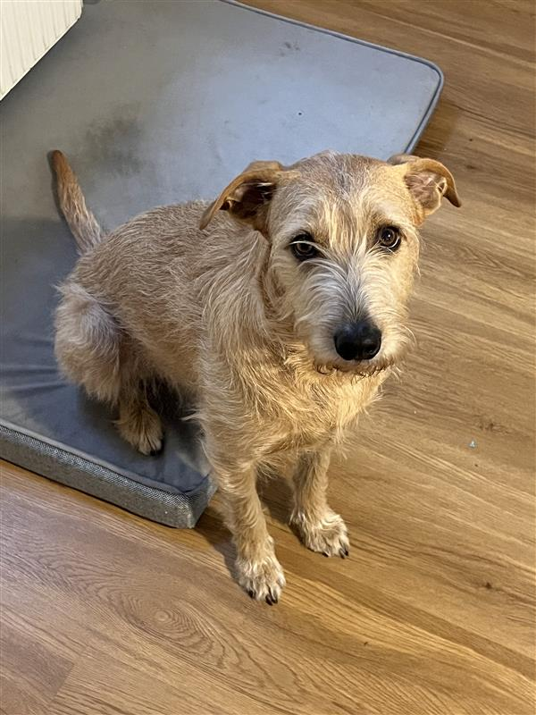

Miko –eine Legendeauf vier Pfoten
Von der Straße in die Berge – und direkt ins Herz. Ein reinrassiger ungarischer Straßenmix mit traurigem Blick, großem Charakter und sehr klaren Vorstellungen davon, wie das Leben zu laufen hat.
Stur, kuschelig, verschmust, leicht kompliziert und bei unvorhergesehenen Ereignissen innerlich bereits im Krisenmodus: Miko ist kein gewöhnlicher Hund. Miko ist ein Gesamtkonzept.

Eine ungarisch-österreichische Geschichte
Miko kam über eine Tiervermittlung zu mir. Und wie das bei den wirklich großen Liebesgeschichten so ist: Es wurde nicht lange gefragt, sondern einfach klar, dass dieser kleine, traurige, kuschelige Spezialist jetzt dazugehört.
Irgendwo begann die Geschichte eines Hundes, der später in Österreich nicht nur ein Zuhause, sondern auch ein Kopfende im Bett erobern würde.
Ab diesem Tag war klar: Aus einem Hund wird ein Familienmitglied, ein Charakterkopf und langfristig ein emotional sehr relevanter Teil des Alltags.
Zwischen Stadtstress, Kuschelbedürfnis, Sicherheitsbedenken und Wursties entstand aus Miko eine echte Legende auf vier Pfoten.
Wer ist Miko wirklich?
Die ehrliche Antwort: schwer in Worte zu fassen. Aber wir versuchen es trotzdem.
Sein Wesen
Miko ist stur, charakterstark, verschmust, kuschelig und manchmal ein kleiner Hosenscheißer. Er liebt Sicherheit, Routinen und alles, was nicht plötzlich und laut daherkommt.
Sein Markenzeichen ist dieser Blick, als würde er jederzeit über die Schwere des Lebens nachdenken — obwohl es wahrscheinlich gerade nur um Snacks geht.
Offizielle Spitznamen
Je nach Situation, Stimmung und Würdegrad hört Miko auf mehrere Identitäten.
Besonders seriös wirkt er meistens dann, wenn er überhaupt nicht seriös ist.